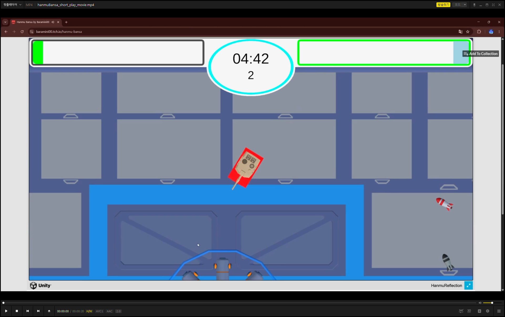

Guildream
2Dギルド経営シミュレーション
6명의 팀원(현 4명)과 함께 개발한 2D 길드 경영 시뮬레이션 게임입니다.
일러스타 페스 등 오프라인 행사 시연을 통해 플레이어 피드백을 수집·반영하며 개발을 진행해왔고
2026년 6월 Steam 스팀 넥스트페스에 등록하여 8월에 출시를 앞두고 있습니다.
6名のチームメンバー（現在は4名）と共に開発した2Dギルド経営シミュレーションゲームです。
「イラストフェス」などのオフラインイベントでのデモを通じてプレイヤーからのフィードバックを収集・反映しながら開発を進めてきました。
2026年6月にSteam Next Festに登録し、8月のリリースを控えています。
Title Logo · タイトルロゴ

Screenshots · スクリーンショット


-
1년간 프로젝트를 완주하며 실제 제품 출시 사이클 전 과정 경험
매주 기획, 아트와의 회의와 Jira 등의 협업 도구를 사용하여 스프린트 관리 1年間プロジェクトを完走し、製品リリースサイクルの全工程を経験
毎週、企画・アートとのミーティングを行い、Jiraなどの協業ツールを用いてスプリント管理を実施 -
텀블벅 크라우드펀딩 목표 대비 200% 이상 달성 (목표 100만원 → 200만원이상 후원) クラウドファンディング目標比200%以上達成（目標100万ウォン → 200万ウォン以上の支援）
-
ScriptableObject 기반 EventChannel<T> 설계로 observer패턴을 통해 이벤트 통신 구현 criptableObject ベースの EventChannel<T> 設計により、オブザーバーパターンを通じてイベント通信を実装
-
디렉터의 요청으로 오프라인 행사(일러스타 페스 등)에서 Google Apps Script를 활용해 Google Spread Sheet에
플레이 데이터를 자동 수집하는 시스템 구현, 기획·디렉터와 데이터 기반 개선 논의에 활용 ディレクターの依頼により、オフラインイベント（イラスタフェスなど）において、Google Apps Scriptを活用してGoogleスプレッドシートに プレイデータを自動収集するシステムを実装し、企画・ディレクターとのデータに基づく改善の議論に活用
Offline Events · オフラインイベント


GPU-Driven Rendering을 통한
그래픽스 렌더링 성능 향상
GPU駆動レンダリングを用いた
グラフィックスレンダリング性能の向上
Indirect draw call을 활용하여 GPU-Driven Rendering Pipeline을 구현한 프로젝트입니다.
기존 파이프라인에 비해 CPU와 GPU간의 드로우 콜 수 감소와 FPS 향상을 확인할 수 있었습니다.
제가 담당한 부분은 Lighting, Post-Processing, 디버그 UI의 구현입니다.
間接ドローコールを利用してGPU駆動型レンダリングパイプラインを実装したプロジェクトです。
既存のパイプラインと比較して、CPUとGPU間のドローコール数の減少とFPSの向上が確認できました。
私が担当したのは、ライティング、ポストプロセッシング、およびデバッグUIの実装です。
Pipeline Architecture · パイプライン構造

Rendering Demos · レンダリングデモ


-
Blinn-Phong 기반 Lighting 파이프라인 설계 및 구현 (Ambient · Diffuse · Specular) Blinn-PhongベースのLightingパイプラインの設計と実装（環境光・拡散光・鏡面反射）
-
ACES Filmic Tone Mapping + 휘도 기반 Bloom을 단일 Post-Processing 패스로 통합 구현 ACESフィルミックトーンマッピング＋ガウシアンぼかしに基づくブルームを単一Post-Processingパスに統合実装
-
Bindless Texture / SSBO / Descriptor Set 분리 설계 등 GPU-Driven 구조 이해 및 활용 BindlessTexture・SSBO・DescriptorSet分離設計などGPU駆動アーキテクチャの理解と活用
-
각종 파라미터, 설정값을 쉽게 조절할 수 있도록 Imgui를 이용해 디버그 UI를 구현 各種パラメータや設定値を簡単に調整できるよう、Imguiを使用してデバッグUIを実装
한무 반사
3Dトップビュー・タンクシューティング 「Hanmu Bansa」
3D 탑뷰 탱크 슈팅 게임으로 온라인 멀티플레이 게임이며 itch.io에서 바로 플레이 가능합니다.
개인 프로젝트이고 간단한 온라인 멀티플레이 게임을 만들고 싶어서 개발하게 되었습니다.
게임의 핵심 아이디어는 탱크로 발사한 포탄이 벽에 충돌하면 무한히 반사하는 것입니다.
3Dトップビューの戦車シューティングゲームで、オンラインマルチプレイ対応です。itch.ioからすぐにプレイできます。
個人的なプロジェクトとして、簡単なオンラインマルチプレイヤーゲームを作りたいと思い、開発することになりました。
このゲームの核心となるアイデアは、戦車から発射された砲弾が壁に衝突すると、無限に跳ね返るという点です。
Play Video · プレイ動画

-
씬 전환 시 로비를 유지하는 데에 어려움이 있었는데, 네트워크 로직만 NetworkBridge로 분리해서 해결 シーン遷移時にロビーの既存プレイヤーを維持できない問題があり、ネットワークロジックのみをNetworkBridgeに分離して解決
-
포탄 반사를 구현할 때 충돌 시점에 속도가 이미 변형되어 문제가 발생
FixedUpdate에서 이전 프레임 속도를 보존하는 구조로 해결 砲弾の反射を実装する際、衝突時点で速度がすでに変化しており、問題が発生していた
FixedUpdateで前のフレームの速度を保持する仕組みに変更して解決 -
Unity Profiler 분석을 통한 문제 해결 Unity Profilerを使ったフレームドロップ原因の特定と最適化
Profiler를 보고 원인을 찾다보니 프레임마다 특정 UI 갱신 패킷을 계속 전송해서 생기는 문제였고, 특정 임계값마다 혹은 변화될 때만 패킷을 보내는 방식으로 수정하여 해결
プロファイラーを確認して原因を突き止めたところ、フレームごとに特定のUI更新パケットが継続的に送信されていたことが原因であることが判明し、 特定の閾値に達したとき、あるいは状態が変化したときのみパケットを送信するように修正することで解決したScreenshots · スクリーンショット
-
제네릭 기반 UIManager 설계 — 팝업 스택 관리 및 캐싱, 타입 안전성 보장 ジェネリックベースのUIManager設計 — ポップアップのスタック管理・キャッシュ、型安全性の保証
-
WSS 프로토콜 통일로 WebGL과 EXE 크로스플레이 구현(WebGL은 WSS만 지원하기 떄문에 WSS로 통일) WSSプロトコルの統一により、WebGLとEXEのクロスプレイを実現（WebGLはWSSのみをサポートしているため、WSSに統一）
-
싱글플레이의 로컬 Host 방식이 동작하지 않았어서 알아본 결과 WebGL은 서버 소켓을 열 수 없다는 것을 알게 되었고, 싱글플레이도 Relay Allocation을 생성해 Host로 우회하는 방식으로 해결 シングルプレイのローカルホスト方式が動作しなかったため調査したところ、WebGLではサーバーソケットを開くことができないことが分かり、 シングルプレイでもRelay Allocationを作成してホストを経由する方式で解決した
-
NetworkManager.Shutdown()이 비동기 완료되기 전에 StartHost()를 재호출하면 SceneManager 이벤트 구독이 끊기는 현상을 파악해, OnClientStopped 이벤트와 IsListening 폴링을 조합해 완료 시점을 정확히 감지하도록 해결 NetworkManager.Shutdown()が非同期で完了する前にStartHost()を再呼び出しすると、SceneManagerのイベントサブスクリプションが切断される現象を特定し、 OnClientStoppedイベントとIsListeningのポーリングを組み合わせて、完了のタイミングを正確に検知するように修正した


Elemental Reset
2Dタワーディフェンス（Google Playリリース済み）
4명의 팀원과 함께 개발한 2D 타워 디펜스 게임으로 현재 Google Play Store에 출시된 상태입니다.
게임의 핵심 아이디어는 원소를 조합하여 더 강한 타워를 만드는 것입니다.
해당 프로젝트에서는 개발보다는 기획, 아트, 프로듀싱을 메인으로 담당하였습니다.
4人のチームメンバーと共に開発した2Dタワーディフェンスゲームで、現在Google Playストアで配信中です。
このゲームの核心となるアイデアは、元素を組み合わせてより強力なタワーを作ることです。
このプロジェクトでは、開発よりも企画、アート、プロデュースを主に担当しました。
Screenshots · スクリーンショット


-
팀원의 게임 개발 숙련도를 고려해 일정 관리 및 역할 분담 チームメンバーのゲーム開発スキルレベルを考慮したスケジュール管理および役割分担
-
Google Play 퍼블리싱 전 과정 직접 진행
비공개 테스트 트랙 운영, 국가별 법적 요구사항·약관 검토, 스토어 등록 및 심사 대응 Google Playパブリッシング全工程を直接担当
クローズドテストトラック運営、国別法的要件・規約の確認、ストア登録および審査対応 -
주로 Aseprite를 이용해 아트 리소스 및 애니메이션을 직접 제작 主にAsepriteを使用して、アートリソースやアニメーションを自ら制作